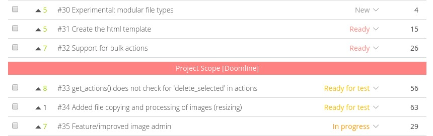

What is the doomline?
Q. What is the Doomline?
A. The Doomline (AKA Project Scope) is the estimated set of User Story points that will be delivered at the end of the project.
Typically, when the User Stories of the backlog are estimated, the Doomline will show all the User Stories that, according to our current estimation, backlog priorization and project scope configuration, will become the expected product.
The Doomline is visible in our interface in the backlog module. If we configured it in the admin area, as a red bar amongst our User Stories. That is your project scope.

Q. How do I configure my project Doomline?
A. To configure your doomline, you should have admin privileges of your project. In the admin area, under the Modules section, find your backlog settings. If you change your 'Expected total of story points' in the admin, the Doomline will automatically move to fit in the new project scope.